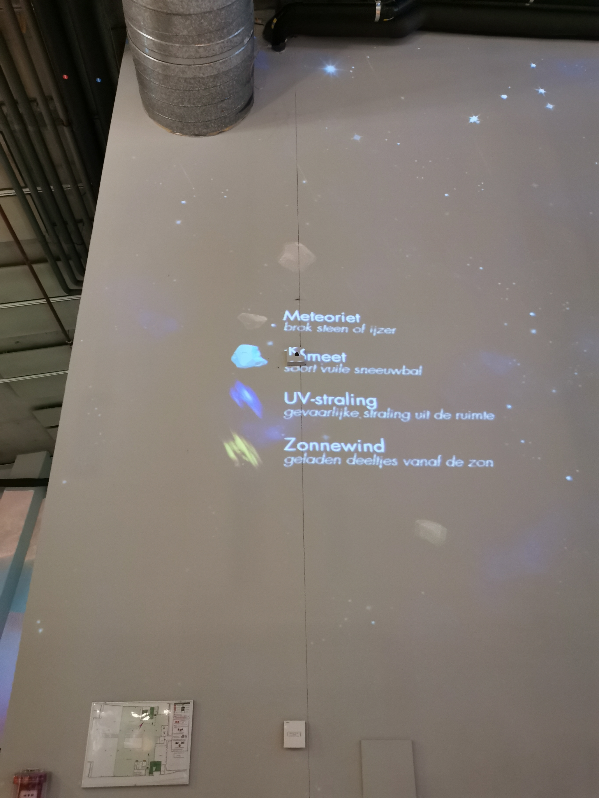
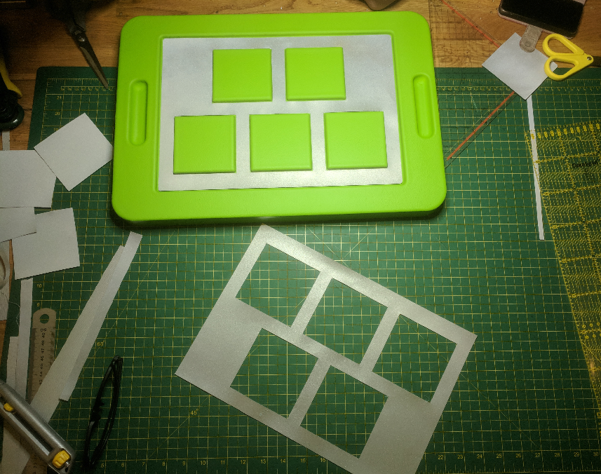
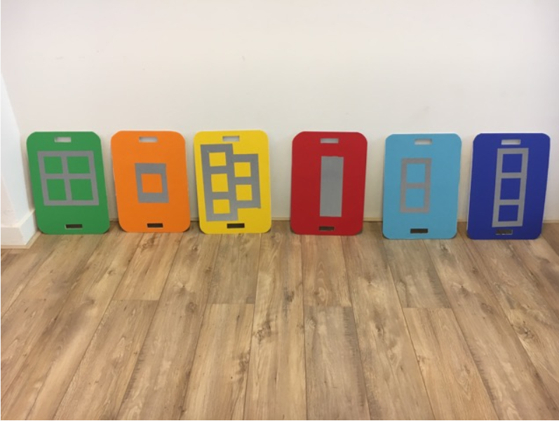
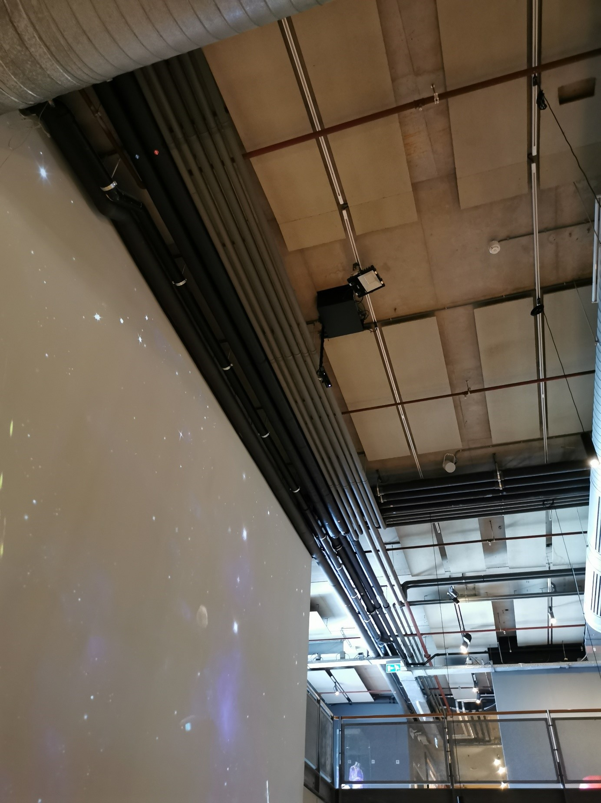

NEMO Excursie


Op de derde verdieping van NEMO is grote ruimte gereserveerd voor de tentoonstelling “Leven in het heelal”. Binnen deze tentoonstelling is een installatie te bekijken waar kinderen doormiddel van beweging de aarde kunnen redden van meteorieten. Elke speler houdt een bord vast waarmee ze heen en weer bewegen. Boven aan de plafond is zijn twee sensoren bevestigd. Deze sensoren kunnen de locatie van de borden meten en die data omzetten in het spel. Het is dus aan de spelers om als groep te strijden tegen alle gevaren die het heelal biedt.
Als je kijkt naar afbeelding 1, dan zie je dat de aarde geprojecteerd wordt op de wand. Links in beeld zie je een overzicht van de verschillende soorten gevaar vanuit de ruimte (zie afbeelding 2). Zoals beschreven moeten de spelers de aarde zien te redden van meteorieten doormiddel van hun interactieve borden. Wanneer ze de borden boven hun hoofd bewegen, verandert de plek ervan op het scherm. Op die manier moeten ze proberen in real-time de meteorieten en andere soort gevaar als Uv-straling af te weren door hun borden op de juiste positie te houden.
De schilden zelf bestaan uit PU schuim met rubber coating (zie afbeelding 3). Op elk schild staat een verschillend patroon weergegeven. NEMO heeft hiervoor gekozen, zodat de sensor aan het plafond de schilden van elkaar kan onderscheiden. Het verschil in patroon zorgt hier dus voor, niet het verschil in kleur.
Ik vind dit project interessant, omdat het een interactief spel is dat erg gemakkelijk is om te begrijpen. Je hebt niet veel dingen nodig om het spel te kunnen spelen, alleen een bord, een beamer en een projector. Daarnaast vind ik het cool dat je in het echt een bepaalde beweging kan uitvoeren, die direct wordt vertaald naar de projectie. Het combineren van beweging met een digitaal spel is een soort van gezonde manier om te gamen.
Afbeelding 1: Bescherm De Aarde!

Afbeelding 2: Verschillende soorten gevaar vanuit de ruimte

Afbeelding 3: Rubberen schilden gemaakt door Mudware, link

Afbeelding 4: De verschillende schilden met elk een ander kleur en patroon, link

Afbeelding 5: De sensor aan het plafond om de locatie van de verschillende schilden te identificeren